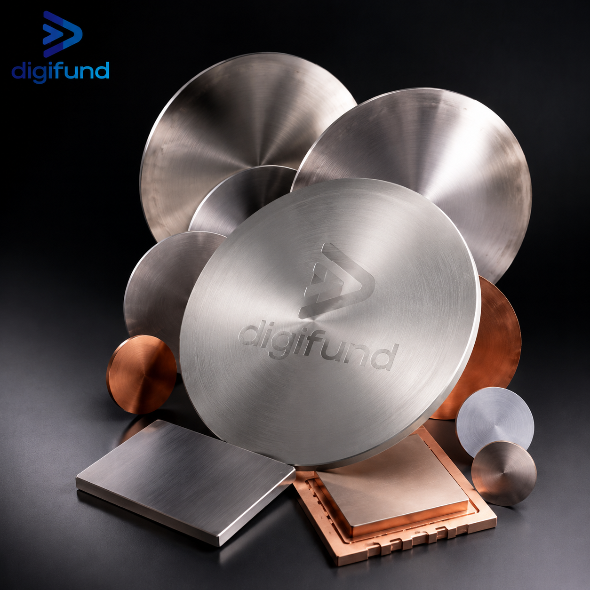
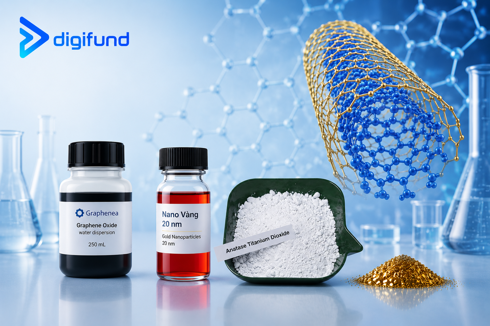

Silicon Wafer Việt Nam – Nhà Cung Cấp Wafer Bán DẫnSilicon Wafer Vietnam – Semiconductor Wafer Supplier
Mua silicon wafer / wafer silicon tại Việt Nam: các loại wafer, lợi ích nguồn nội địa, cách nhận báo giá.
Buy silicon wafers in Vietnam: wafer types, benefits of a domestic source and how to get a quote.
Đọc bài viết →Read article →Silicon Wafer Là Gì? Cấu Tạo & Sản XuấtWhat Is a Silicon Wafer? Structure & Manufacturing
Khái niệm, cấu tạo, quy trình sản xuất từ cát đến tấm wafer và vai trò trong ngành bán dẫn.
Definition, structure, the sand-to-wafer process and its role in the semiconductor industry.
Đọc bài viết →Read article →
Bia Phún Xạ (Sputtering Target) & Màng MỏngSputtering Targets & Thin Films
Nguyên lý phún xạ và vai trò của bia trong tạo màng mỏng cho pin mặt trời, điện tử.
Sputtering principles and the role of targets in thin films for solar cells and electronics.
Đọc bài viết →Read article →
Vật Liệu Nano: Graphene, CNT & Nano Kim LoạiNanomaterials: Graphene, CNT & Metal Nanoparticles
Tính chất và ứng dụng của graphene oxide, ống nano carbon, nano vàng, bột nano TiO₂.
Properties and uses of graphene oxide, carbon nanotubes, gold nanoparticles and TiO₂ nanopowder.
Đọc bài viết →Read article →Bài viết khác
More articles
Phân Loại Silicon Wafer: Si, SiC, GaAs, Sapphire, SOITypes of Silicon Wafer: Si, SiC, GaAs, Sapphire, SOI
So sánh các loại wafer bán dẫn phổ biến về đặc điểm, ưu điểm và ứng dụng.
Compare common semiconductor wafer types by characteristics, strengths and applications.
Ứng Dụng Silicon Wafer Trong Bán Dẫn & Năng LượngApplications of Silicon Wafer in Semiconductors & Energy
Silicon wafer được dùng ở đâu — chip, cảm biến, pin mặt trời — và vì sao khó thay thế.
Where silicon wafers are used — chips, sensors, solar cells — and why they are hard to replace.
Quy Trình Quang Khắc (Photolithography)The Photolithography Process
Từng bước tạo mạch trên wafer: photoresist, phơi sáng, hiện hình, ăn mòn.
Step by step patterning on a wafer: photoresist, exposure, development, etching.
Phòng Sạch & Cấp Độ Sạch ISOCleanrooms & ISO Cleanliness Classes
Cấp độ sạch ISO, kiểm soát nhiễm bẩn và vật tư phòng sạch trong sản xuất bán dẫn.
ISO cleanliness classes, contamination control and cleanroom consumables in chip making.
Digifund — Nhà cung cấp Silicon Wafer tại Việt Nam
Digifund — Silicon Wafer Supplier in Vietnam
Chúng tôi cung cấp silicon wafer, substrate và vật liệu bán dẫn độ tinh khiết cao: Si, SiC, GaAs, Sapphire, InP, SOI cùng bia phún xạ, hoá chất và thiết bị phòng sạch.
We supply high-purity silicon wafers, substrates and semiconductor materials: Si, SiC, GaAs, Sapphire, InP, SOI, plus sputtering targets, chemicals and cleanroom equipment.
Xem catalog sản phẩmView product catalog Liên hệ tư vấnContact us